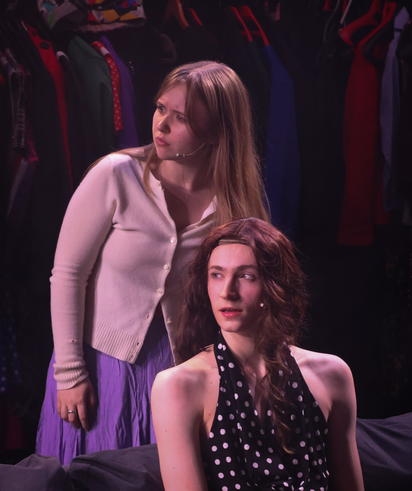
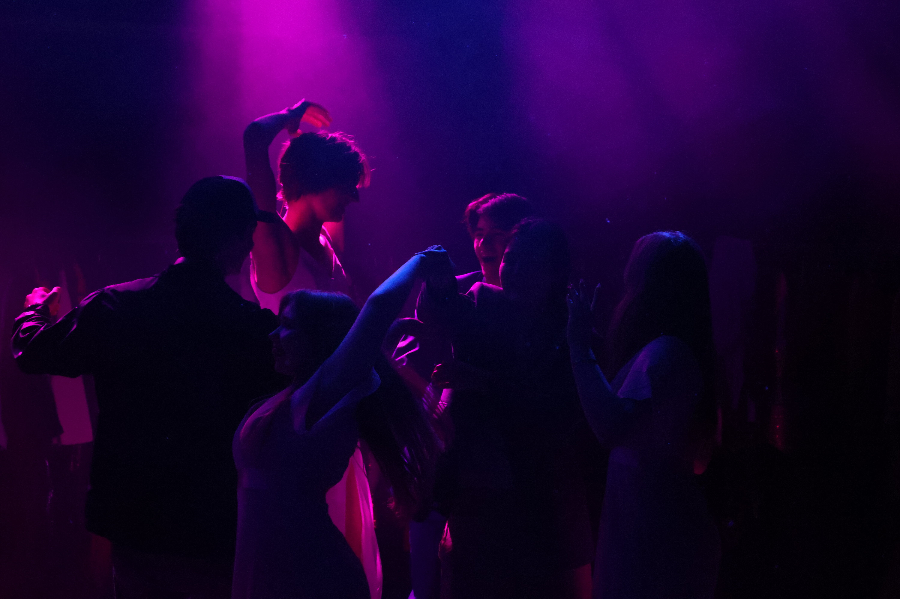
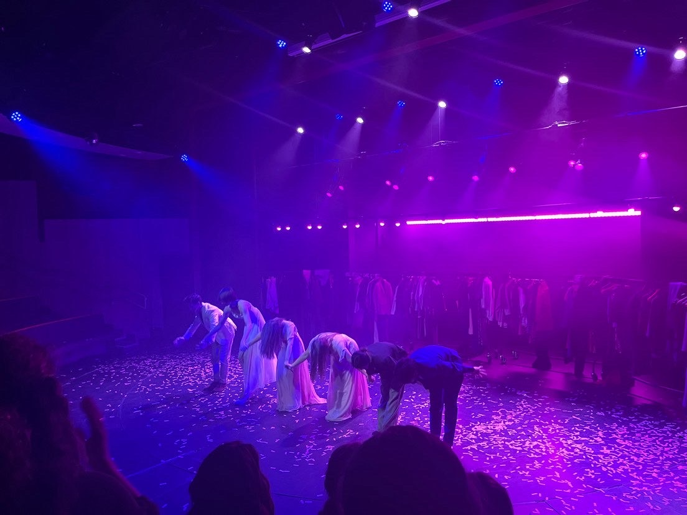
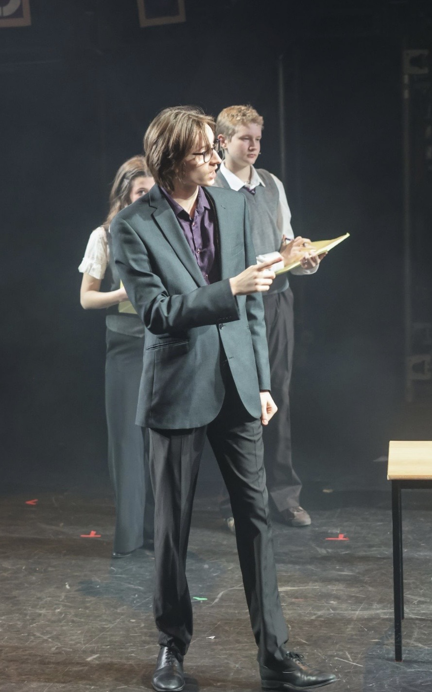
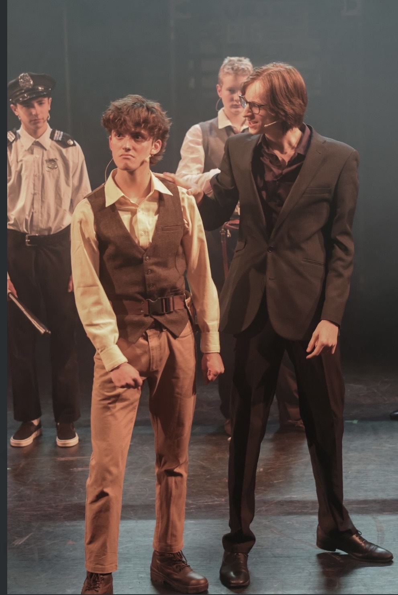
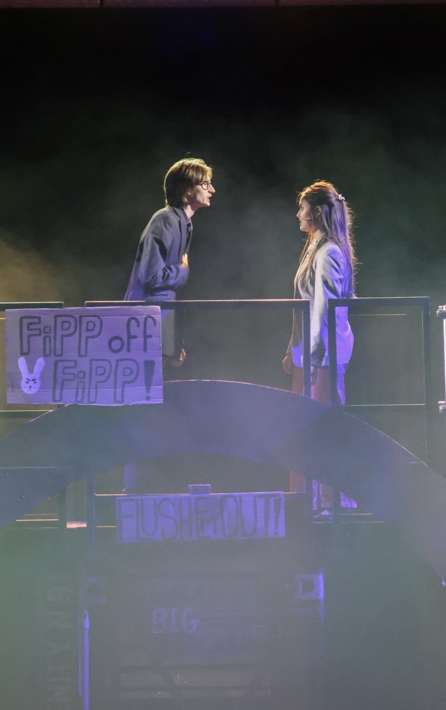

Theatre, Film, and other Stories
Emma (Play) Isabella · 2026
For my Advanced Play Production class in Junior Year, we put on a production of Ava Pickett's brilliant modern adaptation of Emma. The play is wonderful, cheesy, endlessly funny, acting as a reminder to everyone to love and what exactly that means when you don't have the tools to do it well. Getting to play esteemed Bridezilla Isabella Woodhouse was such a joy in a way that I can't summarize in this entry. It's not every day when you as a 6'4 tall person get to wear 4-inch heels and a dress for an hour! I owe everything to the castmates and our director who created such an incredible space to learn and perform that I will forever miss.



School Musicals 2023-2027
Freshman Year: Anything Goes (Captain)
Sophomore Year: Addams Family (Uncle Fester)
Junior Year: Urinetown (Caldwell Cladwell)
Senior Year: Yet to be seen!
While definitely criminal to lump them all in one entry, I wanted to highlight my high school musical experience as it's been the main way I've been on stage for the past few years. Doing this in middle school is how I fell in love with theatre, and being able to continue this further has been a dream come true. I've loved every minute of rehearsing and performing in these musicals. Everyone is so incredibly talented, participates out of love and passion! The collective enthusiasm and dedication in the rehearsal is something that infected me every single year. I can't wait to finish Senior Year with another musical and end it off with a bang!
A few Urinetown pictures because I don't have anything else:



Not Not Not Not Not Enough Oxygen Director and Mick · 2025
I produced, directed, and acted in a production of Caryl Churchill's Not Not Not Not Not Enough Oxygen at the Etcetera Theatre in Camden. I had no clue what it meant to direct a play, but I jumped in anyways! With no experience but plenty of ideas, I stumbled around with two other actors until we found something that worked and was performable. We performed twice at the Etcetera Theatre in Camden. Whether it was good or not is a mystery, but we had a whole lot of fun. Watching family, friends, and teachers come see our work was incredible.
Here's the poster I made:

Lunch (Short Film) Co-Director · Junior Year
I had the honor and joy of being a co-director for the short film Lunch. This was my first every film directing gig, and I'm so lucky to have had my other co-director who had way more experience than me in the industry. Learning from them was an utter joy, and a huge step into a medium that's quite outside of my comfort zone. We premiered along with several other short films at the Everyman Maida Vale in London , and seeing the 14 minutes I had spent the past year working on with my co-director right there on a giant screen for the first time was addicting to say the least.
Sherlock and Daughter (TV Series) Gerald Avery · 2025
I was fortunate to have the opportunity to act in the incredible TV series Sherlock and Daughter. I was on set for about a day and I learned so much from everyone around me. This was my first job on a proper film set, and I'm so grateful for everyone I got to meet there who helped me find my bearings as I was obviously really nervous. It was an awesome learning experience, and I can't wait to do much better on the next set!
NOTE: opening night, something always breaks. WHEN it does, you smile and keep going.